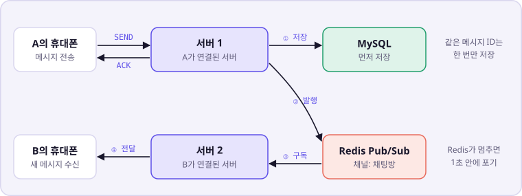
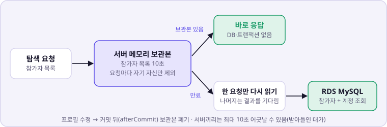
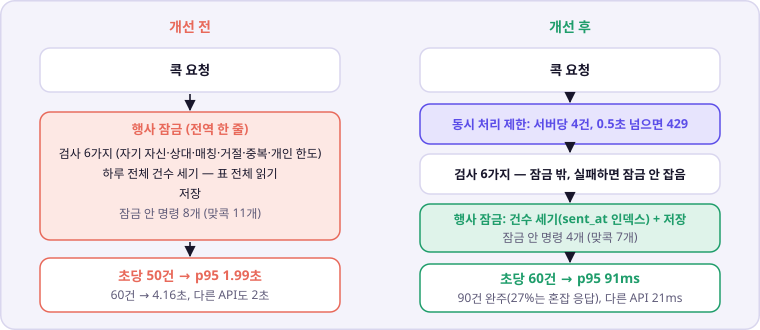
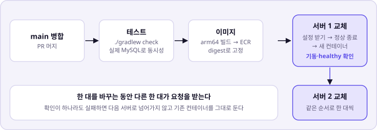
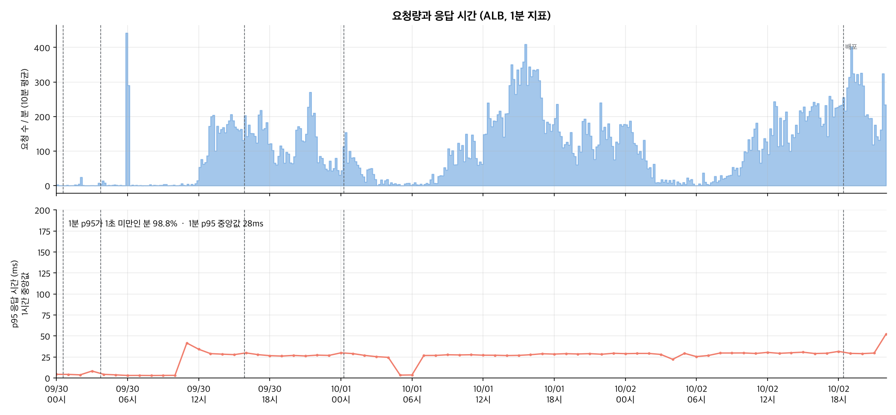
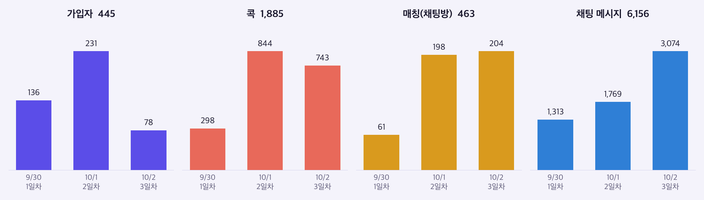

화면은 실제 운영과 같은 규모의 가상 데이터로 찍었습니다. 실제 참가자 화면은 개인정보라 싣지 않았습니다.
아키텍처
Spring Boot 서버는 자동 확장 그룹에서 2~4대로 돌고, 행사 내내 2대로 충분했습니다.
서버가 여러 대라 채팅은 Redis Pub/Sub로 모든 서버에 전달합니다. 메시지 원본은 MySQL이고, 놓친 메시지는 화면이 이력 API로 다시 채웁니다.
접속 중인 사용자는 Redis에 90초 임대로 기록해, 서버가 죽어도 기록이 저절로 사라지게 했습니다(접속 중이면 웹 푸시 생략).

서버 두 대에 흩어진 사용자끼리 채팅을 잇는 방법
주요 경험
1. 탐색 API 응답 지연 — 쿼리별 DB 시간을 재서 고치기
k6 부하 테스트 · performance_schema · 서버 메모리 캐시
문제
참가자 900명 + 채팅 450명을 15분 유지하자 응답 p95가 0.98초, DB CPU 80%, 서버가 4대까지 늘었습니다. 서버를 더 늘리면 다음 한계는 DB 1대였습니다.
원인
측정하는 동안만 performance_schema를 켜서 쿼리별 DB 시간을 쟀습니다. 참가자 전원을 읽는 탐색 목록이 33%, 트랜잭션을 여닫는 명령(COMMIT, SET autocommit 등)이 약 25%였습니다.
해결
탐색 목록을 서버 메모리에 10초 보관하고, 만료되면 한 요청만 다시 읽게 했습니다. 읽기 전용 전환 명령을 DB로 보내지 않고 활동 시각 갱신을 서버 메모리에서 먼저 거르게 해, 운영 측정에서 요청 1천 건당 DB 명령을 40% 줄였습니다(로컬에서 콕 조회 1건: 19개 → 11개).

지표 (같은 조건 900 + 450명)
개선 전
캐시 적용
명령 축소까지
응답 p95
0.98초
0.19초
0.07초
DB CPU
80.1%
70.4%
55.9%
요청 1건당 DB 시간
6.2ms
3.9ms
2.9ms
자동 확장 최대 서버
4대
3대
2대
DB 사양을 올리지 않고 p95 0.98초 → 0.07초, 필요한 서버 4대 → 2대. 대가로 새 참가자와 프로필 수정이 다른 사람 화면에 최대 10초 늦게 보입니다.
2. 행사 전체 콕 한도 — 정확성을 지키면서 처리량 올리기
MySQL 행 잠금 · 격리 수준 · 세마포어 격벽 · Testcontainers
문제
행사 날 전체 콕 수에 한도가 있어 전용 잠금 행을 두자, 모든 콕이 한 줄로 서게 됐습니다. 초당 50건부터 p95가 2초로 무너졌고, 기다리는 요청이 DB 연결을 쥐고 있어 콕과 무관한 API까지 밀렸습니다(초당 90건에서 콕 목록 조회 중앙값 20ms → 2초).
원인
부하 중 잠금 대기를 2초마다 떠서 세 보니 453건 중 448건(99%)이 그 잠금이었고 DB CPU는 24%였습니다. DB가 바쁜 것이 아니라 잠금을 쥐는 시간이 길었습니다.
해결
실패할 요청은 잠금을 잡지 않도록 검사 6가지를 잠금 앞으로 옮기고, 건수 세기에 sent_at 인덱스를 넣었습니다. 잠금 뒤 건수가 앞선 전송을 모두 보도록 격리 수준을 READ COMMITTED로 바꿨습니다. 서버당 동시 4건 제한으로 나머지 DB 연결은 다른 API 몫으로 남겼습니다.

초당 콕 (운영 환경, 셋째 날 최악 데이터)
개선 전 p95
잠금 안 줄인 뒤 p95
동시 처리 제한 뒤 중앙값 (콕 / 콕 목록)
50건
1.99초
203ms
—
60건
4.16초, 중단
91ms
40ms / 20ms
90건
—
4.72초, 중단
590ms / 21ms, 완주
90건에서는 27%가 혼잡 응답(429)을 받았습니다. 정확성은 실제 MySQL에서 다섯 자리를 열 쌍이 다투면 정확히 다섯 쌍만 성공하는지로 검증했습니다.
콕만 보낸 측정에서 처리 한계 초당 40~50건 → 60~90건, 몰림 중에도 콕 목록 조회 중앙값 2초 → 21ms 유지
3. 믿을 수 있는 배포 — 서비스를 내리지 않고 5번 배포
GitHub Actions · ECR · SSM · 이미지 digest · 롤링 교체
문제
:latest 이미지를 받고 ALB healthy만 확인해, 두 서버가 다른 이미지를 받거나 새 프로세스가 죽어도 통과할 수 있었습니다. 배포 스크립트는 한 줄이 실패해도 계속 실행됐습니다.
해결
테스트를 통과한 뒤에만 이미지를 만들고, 그 digest를 두 서버에 그대로 넘겼습니다. 서버를 한 대씩 교체하며 실행 중인 이미지가 방금 배포한 digest인지, 헬스체크가 UP인지 확인한 뒤에만 다음 서버로 넘어갑니다.

행사 중 서비스를 내리지 않고 5번 배포. 다만 배포 순간 끊긴 연결 381건이 남았습니다. 컨테이너를 멈추기 전에 ALB에서 먼저 빼는 순서가 빠져 있었고, 다시 한다면 그 순서부터 고칩니다.
4. 첫날 웹 푸시 미발송 — 실패에서 배운 것
로그 추적 · 회귀 테스트 · AI 변경 리뷰
문제
첫날 푸시 발송 257건이 실패했지만, 콕과 채팅은 정상이라 겉으로 드러나지 않았습니다.
원인
로그로 추적해 보니 AI로 만든 다른 변경에서 암호화 제공자 초기화 순서가 바뀌어 있었습니다. 변경 목적만 보고 리뷰해 그 줄을 놓쳤습니다.
해결
초기화 순서를 바로잡고, 제공자가 없는 상태의 첫 발송을 재현하는 회귀 테스트를 더해 첫 실패 약 10시간 뒤(10/1 00:17) 배포했습니다.
이후 같은 오류 0건. 이 일 이후 AI가 만든 변경은 diff 전체를 읽고 리뷰합니다.
운영 결과

3일간 요청 44만 건, 1분 p95 중앙값 28ms. 배포 시각을 뺀 서버 오류는 8건(0.002%)이었습니다.

날짜별 이용량. 가입 445명, 매칭 463건, 채팅 메시지 6,156건
테스트는 BE 455개(실제 MySQL 통합 테스트 포함), FE 94개이고, k6로 900명, 휴대폰 환경 600명, 1시간 연속 부하를 확인했습니다.
남은 한계
배포 순간 연결 실패 381건 — ALB에서 먼저 빼고 연결을 비운 뒤 교체해야 합니다.
캐시는 서버마다 따로 보관해 서버끼리 최대 10초 어긋납니다.
60~90건은 콕만 보낸 측정입니다. 다른 요청이 섞인 측정에서 행사 잠금 처리량은 초당 약 46~56건이었습니다.
행사 한도는 DB 잠금으로 지켰습니다. 다시 한다면 Redis 카운터와 사후 대조를 검토합니다.